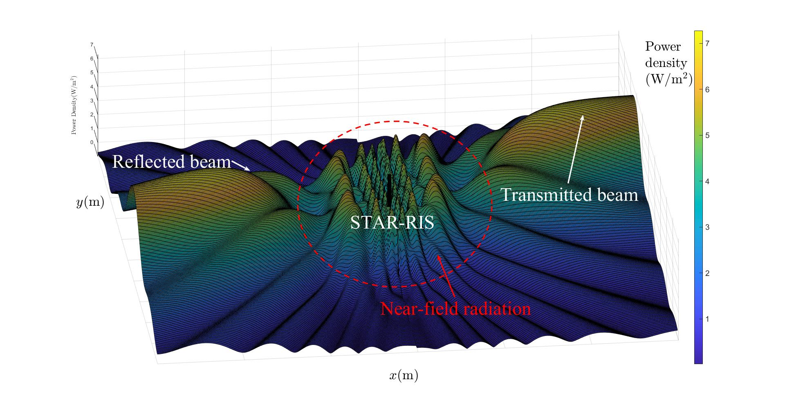
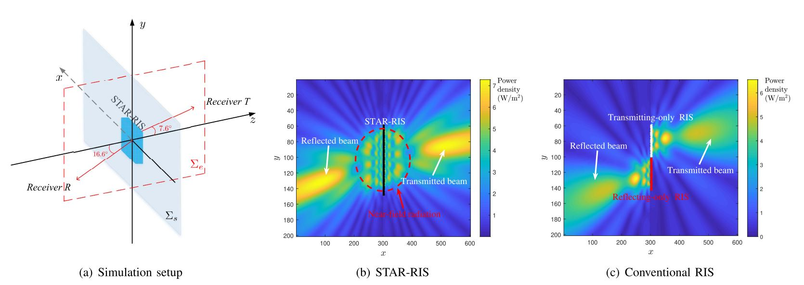
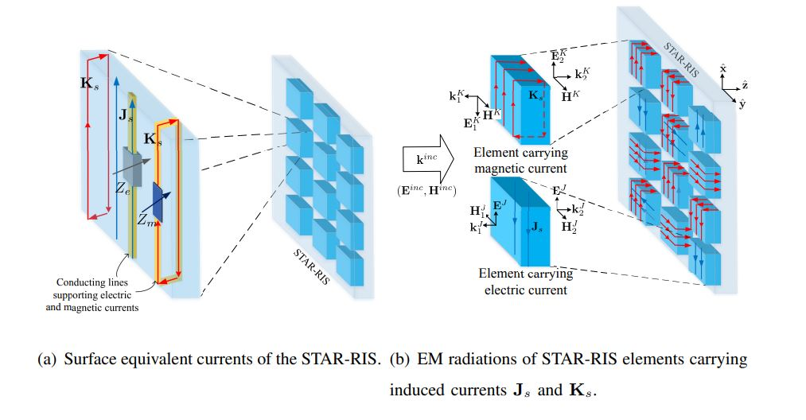
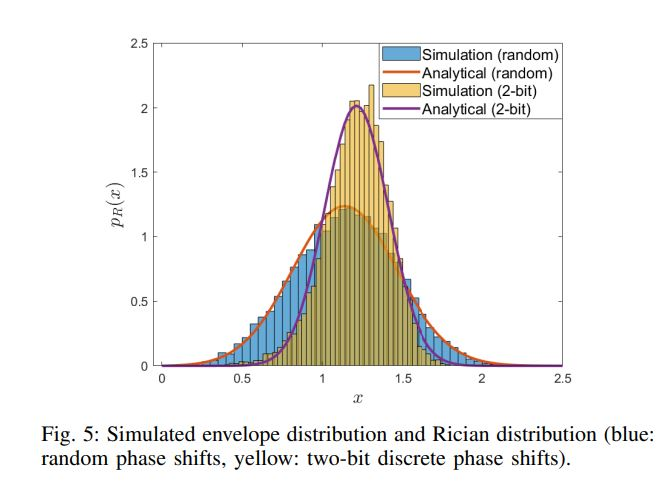
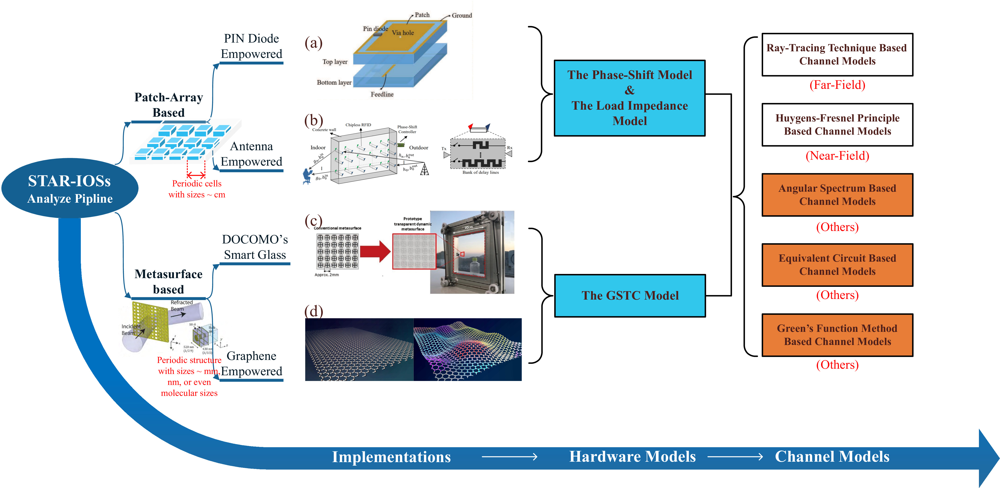

Jiaqi XuQueen Mary University of London |
|
| Google Scholar: BiliBili Channel: | jiaqi.xu@qmul.ac.uk
I graduated from Peking University, obtained B.S. degree in Physics and in Computer Science.
Research Interests
I model, design, and analysis 5G and future-generation wireless technologies, including reconfigurable intelligent surfaces (RISs), MIMO and non-orthogonal multiple access (NOMA).
Featured Research
- Simulating the signal power density (radiation pattern) of an STAR-RIS. [paper]  
- Enabling STAR with passive-lossless RIS elements, How T and R are correlated? [paper] 
- A physics-compliant modelling of RIS-aided channel with discrete phase-shift (with Rician distirbution). [paper] 
- Simultaneously Transmitting and Reflecting (STAR) RISs, Their Modeling and Implementation. [paper] 
Other Publications
-
Reconfigurable intelligent surfaces: Principles and opportunities [PDF]
Yuanwei Liu, Xiao Liu, Xidong Mu, Tianwei Hou, Jiaqi Xu, Zhijin Qin, Marco Di Renzo, Naofal Al-Dhahir.
IEEE Communications Surveys & Tutorials.
What we did in plain words: We conducted a survey on the topic of reconfigurable intelligent surfaces (RISs) -
A Novel Channel Model for Reconfigurable Intelligent Surface-assisted Wireless Networks [PDF]
Jiaqi Xu, Yuanwei Liu.
GLOBECOM 2020 - 2020 IEEE Global Communications Conference
What we did in plain words: We proposed a novel, physics-compliant channel model for reconfigurable intelligent surfaces (RISs)
-
A Novel Physics-based Channel Model for Reconfigurable Intelligent Surface-assisted Multi-user Communication Systems [PDF]
Jiaqi Xu, Yuanwei Liu.
IEEE Transaction on Wireless Communications.
What we did in plain words: We proposed a novel channel model for multi-user RIS-assisted network. Specifically, in the model, the signal reflected through the scatters and the RIS elements are jointly studied as multipath components of the overall received envelope. This novel strategy simplifies the mathematical structure of the channel gain and is able to compactly derive the distribution of the overall channel in closed-form.
-
Reconfigurable Intelligent Surface-assisted Networks: Phase Alignment Categories [PDF]
Jiaqi Xu, Yuanwei Liu.
ICC 2021 - IEEE International Conference on Communications 2021
What we did in plain words: We proposed four phase alignment categories. This novel strategy helps us to analyze the performance of the RIS-assisted network.
-
STAR-RISs: Simultaneous Transmitting and Reflecting Reconfigurable Intelligent Surfaces [PDF]
Jiaqi Xu, Yuanwei Liu, Xidong Mu, Octavia A Dobre
IEEE Wireless Communication Letters.
What we did in plain words: We proposed the concept of ``STAR'' and demonstrate the benefits of implementing STAR-RISs rather than conventional reflecting-only RIS.
-
STAR: Simultaneous Transmission And Reflection for 360° Coverage by Intelligent Surfaces [PDF]
Yuanwei Liu, Xidong Mu, Jiaqi Xu, Robert Schober, Yang Hao, H. Vincent Poor, Lajos Hanzo
IEEE Wireless Communication.
What we did in plain words: Base the concept of ``STAR'' we discussed, in high-level, the benefits of STAR-RISs from hardware and communication perspectives.